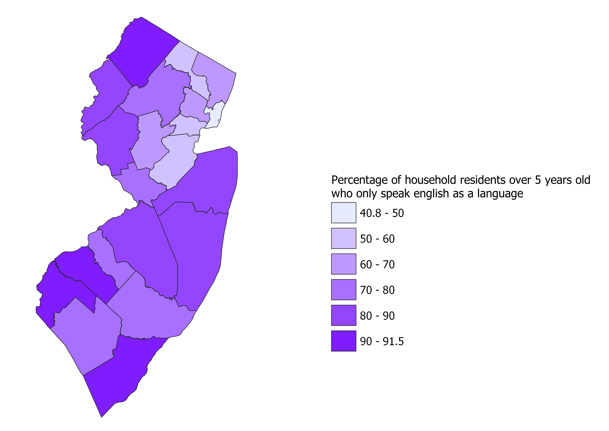
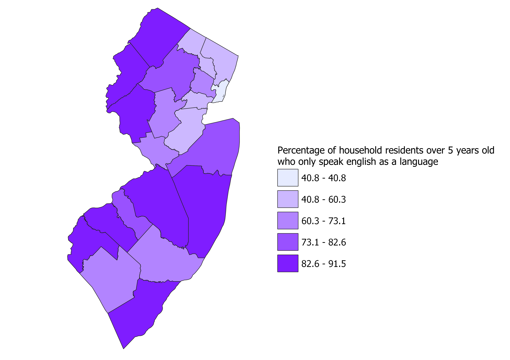
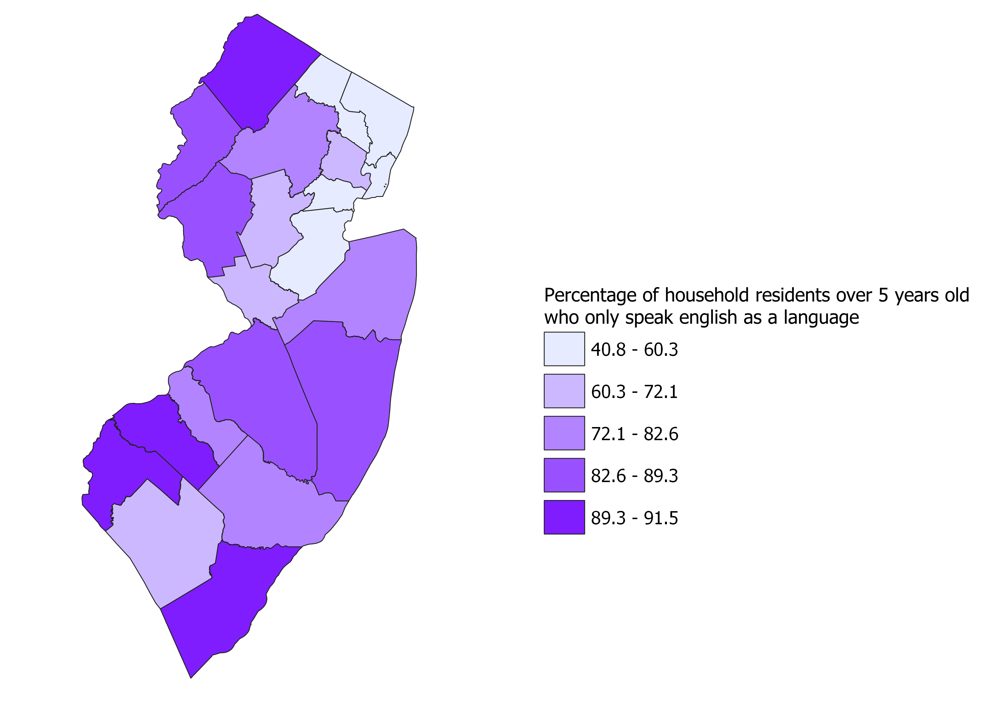

Homework 8: New Jersey census data chloropleths on ratios
Ken Donny-Clark
These Chloropleths represent the ratio of people over the age of 5 who speak only english against the entire population of individuals over 5 years old for people living in the counties of New Jersey. I expressed these ratios as perecents, which I took by multiplying the ratios by 100 in qgis. I was interested in how much how much of the population for different counties were not fluent in foreign languages. This is because it can show different counties how diversified their populations are and prehaps encourage them to be more welcoming towards members of foreign communities.
Chloropleth 1, using pretty breaks

This map classified the ratio of people who only speak english using pretty breaks. Pretty breaks are visually appealing and easy to read and visualize, but it sacrifices some accuracy for readability and does not always correctly represent the data.
Chloropleth 2, using natural breaks

This map classified the ratio of people who only speak english as a language using natural breaks, also known as jenks classification. Natural breaks classify data according to the natural turning points and they minimize the variation within each interval. This can be beneficial when displaying the chloropleth by itself, but since each state's natural turning points will be different, natural breaks are not consistent and bad for comparison across different chloropleths.
Chloropleth 3, using equal count

This chloropleth and its ratios are classified using equal count, or quantile classification. Quantile classification arranges groups so they have roughly the same quantity of members, due to this the way data is represented in the chloropleth is sometimes misleading.